目錄
1. 緣起：電池調控的 action space 該怎麼設計？
我們的場景是電池儲能調控：每個決策時點，agent 要決定電池「充電、放電、或 idle」，以及充放的功率大小。同一件事，至少有三種動作空間的建模方式：
| 建模方式 | 定義 | 優點 / 問題 |
|---|---|---|
| ① 純 continuous | \(a \in [-1, 1]\)：正值 = 充電功率、負值 = 放電功率、0 = idle | 最簡單，任何 continuous RL（DDPG/TD3/SAC/PPO）直接可用。但 idle 沒有明確語意——Gaussian policy 幾乎不可能精確輸出 0，會在 0 附近抖動，造成頻繁的微量充放電（傷電池壽命、觸發不必要的轉換損耗）；「要不要動作」和「動多大」兩個決策被壓在同一個軸上。 |
| ② 純 discrete | 把 \([-1,1]\) 切成 \(N\) 格，例如 \(\{-1, -0.75, \dots, 0.75, 1\}\) | DQN 系列直接可用，idle（=0）是明確的一格。但精度與動作數是硬取捨：切太粗控制不精細，切太細動作數爆炸、又丟掉了「相鄰功率效果相近」的連續結構，泛化差。 |
| ③ Hybrid（parameterized） | discrete \(k \in \{\text{充電}, \text{放電}, \text{idle}\}\)；選了充/放電後再給 continuous 參數 \(x_k \in [0,1]\)（功率量值） | 語意最乾淨：模式選擇與功率大小解耦，idle 是一個明確的離散動作、不帶參數；功率保有連續精度。代價是：標準 RL 演算法無法直接處理這種「離散 + 連續」混合的動作空間——這正是本報告要探討的問題。 |
落到網路輸出上：一共 5 維
以方案③把我們的問題具體化，policy 網路的輸出就是 5 維——3 維給離散、2 維給連續：
2. 前置知識：RL 是怎麼建模 discrete / continuous action 的？
進入各方法前，先把最基本的事講清楚：policy network 到底怎麼「輸出一個動作」？共同模式是——網路不直接輸出動作，而是輸出一個機率分佈的參數，動作再從這個分佈抽樣（或取最大）。離散與連續的差別，就在於用什麼分佈。
2.1 Discrete
Policy-based：網路輸出 \(K\) 維 logits，過 softmax 得到各動作的機率（Categorical distribution），動作從中抽樣；探索由抽樣的隨機性天然提供：
$$\pi_\theta(k \mid s) \;=\; \mathrm{softmax}\bigl(f_\theta(s)\bigr)_k \;=\; \frac{e^{f_k(s)}}{\sum_{j=1}^{K} e^{f_j(s)}}$$Q-learning：網路輸出每個動作的 Q 值，選 Q 值最大的動作 \(k^* = \arg\max_k Q(s, k)\)（DQN），探索靠 \(\epsilon\)-greedy。
兩條路都依賴同一個前提——動作數有限、可枚舉。
2.2 Continuous
Policy-based：網路輸出動作每一維的 mean \(\mu_\theta(s)\) 與 std \(\sigma_\theta(s)\)，動作從分佈中抽樣（通常是 Normal）：
$$x \;\sim\; \mathcal{N}\bigl(\mu_\theta(s),\, \sigma_\theta(s)^2\bigr)$$如果動作是有界的，可以把抽出的值 clip 回合法範圍，或改用有界的分佈——像 squashed Normal（−1~1）或 Beta 分佈（0~1）。
Q-learning：不能直接對連續動作取 \(\arg\max\)——動作無法枚舉，也沒有 actor 可以直接輸出動作。要走這條路得採用 DDPG（加一個 deterministic actor \(x = \mu_\theta(s)\) 把 argmax「學」出來，靠 \(\nabla_x Q(s,x)\) 更新）或 NAF（把 Q 對動作限制成二次型，argmax 有解析解）。
2.3 兩種頭都要 → 三篇論文各自的拼法
混合動作空間的困境到此明朗：softmax 頭給不出連續值，Gaussian 頭給不出無序的離散類別。後面三篇論文，本質上就是三種「把兩種頭組合起來」的方式：
| 方法 | 離散部分的建模 | 連續部分的建模 |
|---|---|---|
| P-DQN | \(K\) 個 Q 值 + \(\arg\max_k\)（§2.1 的 Q-learning 路線） | deterministic actor（§2.2 的 Q-learning／DDPG 路線） |
| H-PPO | softmax / Categorical（§2.1 的 policy-based 路線） | Gaussian mean/std（§2.2 的 policy-based 路線） |
| HyAR | latent 向量 → embedding table 最近鄰 | latent 向量 → VAE decoder |
3. 問題定義：Parameterized Action MDP (PAMDP)
沿用 Masson et al. (2016) 的形式化：離散動作集合 \(\mathcal{K} = \{1, \dots, K\}\)，每個離散動作 \(k\) 帶一個自己的連續參數空間 \(\mathcal{X}_k \subseteq \mathbb{R}^{m_k}\)。完整的混合動作空間為：
$$\mathcal{A} \;=\; \bigl\{\, (k, x_k) \;\bigm|\; x_k \in \mathcal{X}_k,\; k \in \mathcal{K} \,\bigr\}$$以此為動作空間的 MDP 稱為 PAMDP。以 RoboCup 2D 足球的 Half Field Offense（HFO，P-DQN 與 H-PPO 的實驗環境）為例：\(K = 3\)，動作為 Dash(power, direction)、Turn(direction)、Kick(power, direction)——Dash 和 Kick 的參數空間是二維（功率＋方向）、Turn 是一維（方向），每個離散動作各自帶著維度不同的連續參數。
文獻中常見的 benchmark 也都是這個結構：Platform、Goal、Catch Point（HyAR 與 H-PPO 的實驗環境），以及 MOBA 遊戲（王者榮耀）的技能施放（P-DQN 的實驗）等。
4. 方法版圖：四條路線
| 路線 | 代表方法 | 一句話 |
|---|---|---|
| 把連續離散化 | DQN + discretization (Sherstov & Stone 2005) | 丟精度、動作數爆炸。H-PPO 實驗中 HFO 場景即使每參數只切 8 方向 × 6 檔功率，動作數就上看 \(10^4\)。 |
| 把離散連續化（relaxation） | PA-DDPG (Hausknecht & Stone, ICLR 2016) | actor 一次輸出「每個離散動作一個分數 \(f_{1:K}\)」+「所有連續參數 \(x_{1:K}\)」，用 argmax/softmax 選離散動作，整包當 continuous 空間跑 DDPG。放大了動作空間複雜度，後續論文實測皆不穩定。 |
| 為混合結構特製演算法 | P-DQN（value-based, off-policy）、H-PPO（policy-based, on-policy）、Q-PAMDP、HHQN（階層式） | 直接在網路架構上同時放離散頭與連續頭，各自用適合的方式更新。 |
| 表徵學習（representation） | HyAR (ICLR 2022) | 不改演算法、改動作空間本身：把 \((k, x_k)\) 編碼進一個緊緻的連續 latent space，在裡面跑標準 TD3，動作再解碼回去執行。 |
5. P-DQN（arXiv 2018）value-based · off-policy
前情提要：DQN 與 DDPG 各自怎麼運作？
P-DQN 是這兩者的組合，先看它們的差別。DQN：Q 網路吃 \(s, a\)、吐一個 scalar 的 Q 值；因為動作是有限的離散集合，決策時把每個 \(a\) 都評分一遍、取 \(\arg\max\) 即可：
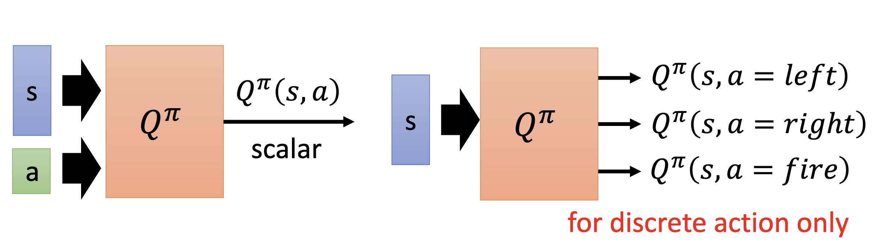
DDPG：連續動作無法枚舉，argmax 做不到。於是多加一個 actor \(\pi\)：吃 \(s\)、直接輸出連續動作 \(a\)，接到 Q 網路後整體可視為一個大網路——更新 actor 時就是固定 Q、沿著讓 \(Q^\pi(s,a)\) 變大的方向調 \(\pi\)（把 argmax「學」出來）：
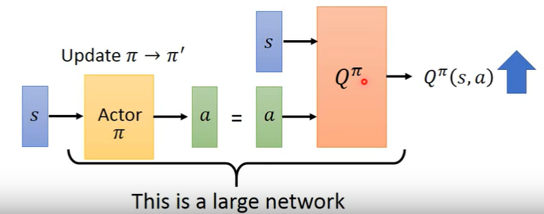
混合動作空間剛好是「離散的 \(k\)（DQN 擅長）＋ 連續的 \(x_k\)（DDPG 擅長）」——P-DQN 就是把兩者拼起來。
核心想法：DQN 與 DDPG 的混血
先回顧一般（離散動作）的 Bellman optimality equation——DQN 的基礎（其 Eq. 2.1）：
$$Q(s, a) = \mathbb{E}_{r_t,\, s_{t+1}}\Bigl[\, r_t + \gamma \max_{a' \in \mathcal{A}} Q(s_{t+1}, a') \,\Bigm|\, s_t = s,\; a_t = a \Bigr]$$動作有限時，右邊的 \(\max_{a'}\) 把每個動作的 Q 值都算一遍取最大即可。把動作換成混合動作 \((k, x_k)\)，同一條式子就變成（其 Eq. 3.1）：
$$Q(s_t, k_t, x_{k_t}) = \mathbb{E}\Bigl[\, r_t + \gamma \max_{k \in [K]} \; \underbrace{\sup_{x_k \in \mathcal{X}_k} Q(s_{t+1}, k, x_k)}_{\text{連續部分的 sup 難算}} \,\Bigr]$$外層對 \(K\) 個離散動作取 max 很便宜，麻煩在內層對連續參數取 sup。P-DQN 的解法：用一個 deterministic actor 網路 \(x_k(s;\theta)\) 去近似這個 argsup（就像 DDPG 的 actor 近似連續 argmax）：
$$Q\bigl(s, k, x_k(s;\theta); \omega\bigr) \;\approx\; \sup_{x_k \in \mathcal{X}_k} Q(s, k, x_k; \omega)$$於是 Bellman equation 退化回「有限 \(K\) 個動作的 DQN」形式，兩個網路、兩個 loss（其 Eq. 3.4）：
$$\ell^Q(\omega) = \tfrac{1}{2}\bigl[\,Q(s_t, k_t, x_{k_t}; \omega) - y_t\,\bigr]^2 \qquad \ell^\Theta(\theta) = -\sum_{k=1}^{K} Q\bigl(s_t, k, x_k(s_t;\theta); \omega_t\bigr)$$其中 \(y_t\) 是（n-step）TD target。
動作選擇
探索用 \(\epsilon\)-greedy（以機率 \(\epsilon\) 在整個混合空間均勻抽），也可對連續部分加 DDPG 式雜訊。角度類參數用 \((\cos\alpha, \sin\alpha)\) 表示以避開週期性問題；參數越界用平方懲罰處理。
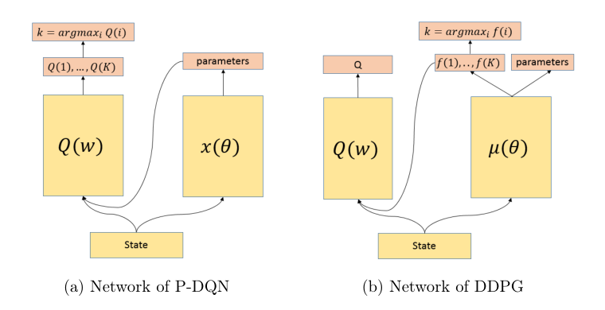
P-DQN 自述的優勢
- 不對動作空間做任何近似或 relaxation（對比 PA-DDPG）。
- off-policy + deterministic 連續策略 → 可用 replay buffer，樣本效率高（對比 on-policy 的 Q-PAMDP / H-PPO）。
- 離散選擇是明確的 \(\arg\max_k Q\)，可以直接吃人類示範資料（示範裡只有 \(k\)，沒有 relaxation 需要的分數 \(f\)）。
實驗
- HFO 射門：進球率 0.98–0.997、平均步數 78–88，同時優於 PA-DDPG（0.80–1.00 / 105–119 步）與 SARSA baseline；訓練成本約 1 小時 CPU（PA-DDPG 要 3 天 GPU）。
- 王者榮耀 1v1（魯班 solo）：179 維手工特徵、6 個離散動作（移動(α)、普攻、三個技能(位置/方向)、回城），48 worker 非同步訓練，學習速度遠快於 PA-DDPG，能穩定打贏內建 AI。
6. H-PPO（IJCAI 2019）policy-based · on-policy
核心想法：一個 critic、兩個平行 actor
既然 stochastic policy 在離散（softmax）和連續（Gaussian）空間都天生可用，那就各給一個 actor、平行並存：
連續 actor 每步輸出所有 \(K\) 個動作的參數分佈，但只執行被抽中的 \(k\) 對應的 \(x_k\)。critic 只估 V(s) 而非 Q，理由是 PAMDP 裡 Q 有「過參數化」問題：Q 網路輸入得塞所有動作的參數（維度不一、無法只塞 \(x_k\)），但真正的 Q 根本不依賴未執行動作的參數：
$$Q(s, a, x_{a_1}, \dots, x_{a_k}) = Q(s, a, x_a)$$用 \(V(s)\) 完全繞開這件事。
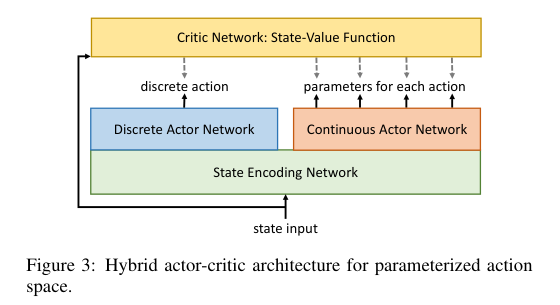
訓練：兩個 PPO clipped objective
兩個 actor 用同一個 advantage \(\hat A_t\)（n-step estimator + shared V critic），各自最佳化自己的 clipped surrogate（其 Eq. 9, 10）：
$$L_d^{\mathrm{CLIP}}(\theta_d) = \hat{\mathbb{E}}_t\Bigl[\min\bigl(r_t^d \hat A_t,\; \mathrm{clip}(r_t^d, 1\!-\!\epsilon, 1\!+\!\epsilon)\hat A_t\bigr)\Bigr] \qquad r_t^d = \frac{\pi_{\theta_d}(k \mid s_t)}{\pi_{\theta_d^{\mathrm{old}}}(k \mid s_t)}$$ $$L_c^{\mathrm{CLIP}}(\theta_c) = \hat{\mathbb{E}}_t\Bigl[\min\bigl(r_t^c \hat A_t,\; \mathrm{clip}(r_t^c, 1\!-\!\epsilon, 1\!+\!\epsilon)\hat A_t\bigr)\Bigr] \qquad r_t^c = \frac{\pi_{\theta_c}(x_k \mid s_t)}{\pi_{\theta_c^{\mathrm{old}}}(x_k \mid s_t)}$$注意：兩個策略被當成獨立分佈分開更新，objective 沒有互相 conditioned（不是 joint ratio \(\pi_d \cdot \pi_c\)）。兩者的協調靠：(1) 共享的 encoding 層、(2) 共享的 critic / advantage 訊號（論文引述 Wei et al. 2018 將參數 policy conditioned 於離散 policy 的作法，曾回報 joint learning 不穩定）。
實驗
四個自製環境（Catching Point、Moving、Chase and Attack、Half Field Football），對比 P-DQN、離散化 DQN、PA-DDPG（PA-DDPG 因方差過大、學不起來而被排除在圖表外）。
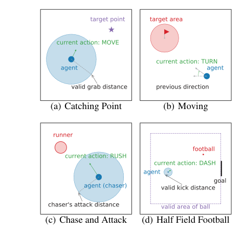
成功率：
| 環境 | DQN（離散化） | P-DQN | H-PPO |
|---|---|---|---|
| Catching Point | 6.1% | 82.5% | 96.3% |
| Moving | 0% | 1.6% | 90.5% |
| Chase and Attack | 99.9% | 99.9% | 100.0%（方差最小） |
| Half Field Football | 0% | 76.3% | 95.4% |
論文結論：H-PPO 在四個任務上皆穩定學習，並在其中三個環境大幅領先（Chase and Attack 三者近乎打平，但 H-PPO 方差最小）。論文也提出往一般階層動作空間的推廣（每個決策節點一個 actor，全部共享 encoder 與 critic），但實驗留作 future work。
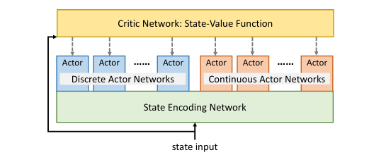
7. HyAR（ICLR 2022）：把混合動作壓進 latent space representation · off-policy
三個關鍵性質（HyAR 論文的分類軸）
HyAR 論文用三個性質檢視既有方法（其第 2 頁）。白話來說，就是三個問題：
- Scalability（可擴展性）——離散動作變多，方法會不會垮？
PA-DDPG / H-PPO / P-DQN 的網路每一步都要輸出「所有離散動作的全部連續參數」。K = 3 時沒感覺，但動作一多（例如組合動作有 \(2^n\) 個），輸出維度跟著爆炸；而每一步真正被執行的只有其中一組參數，其餘都是白算的冗餘，也讓 policy 更難學。論文稱之為 redundancy 與 scalability issue——這三個方法在這條都不及格。 - Stationarity（平穩性）——replay buffer 裡的舊經驗，現在還算數嗎？
這條是針對階層式的 HHQN：高層選離散動作 \(k\)，低層把 \(k\) 當成類似 subgoal 的條件、輸出連續參數。問題是低層 policy 一直在學一直在變——舊經驗裡「當時選了 \(k\)、發生了某個 transition」是當時的低層做出來的；低層變了之後，同樣選 \(k\) 不會再引發同樣的 transition，舊經驗對高層而言就失真了，高層等於面對一個非平穩的環境，off-policy 學習會出問題。PA-DDPG / H-PPO / P-DQN 學的是單一整體的 policy / value（相當於直接學 joint policy），沒有上下層互相追逐的問題，這條過關。 - Dependence（依賴性）——連續參數知道自己在配合哪個離散動作嗎？
離散動作 \(k\) 決定了它的參數空間 \(\mathcal{X}_k\)；同一個參數值配上不同的 \(k\)，語意可以完全不同（電池的例子：x = 0.8 配「充電」是充八成功率、配「放電」是反方向的八成功率）。所以原則上，最優 policy 不可能在還沒選定 \(k\) 之前就先決定參數。PA-DDPG / H-PPO 的連續輸出與離散選擇各走各的，忽略了這層依賴；P-DQN（Q 同時看著 \(k\) 和 \(x\) 評分）和 HHQN（低層明確 condition 在 \(k\) 上）有建模到。
HyAR 論文用這三個性質給主要方法打分（其 Table 1）：
| 方法 | Scalability | Stationarity | Dependence | Latent space |
|---|---|---|---|---|
| PA-DDPG | ✗ | ✓ | ✗ | ✗ |
| H-PPO | ✗ | ✓ | ✗ | ✗ |
| P-DQN | ✗ | ✓ | ✓ | ✗ |
| HHQN（階層式） | ✓ | ✗ | ✓ | ✗ |
| HyAR | ✓ | ✓ | ✓ | ✓ |
7.1 為什麼要這樣做？
- Scalability：PA-DDPG / P-DQN / H-PPO 的 actor 都要一次輸出所有動作的所有參數，網路輸出維度 \(= K + \sum_k |\mathcal{X}_k|\)，離散動作一多（例如組合動作 \(2^n\) 個）就爆掉。HyAR 的 latent 空間固定是 \(d_1 + d_2\) 維（預設 6+6），與 \(K\) 無關。
- Dependence：\(k\) 決定了 \(x_k\) 的語意，多數方法直接忽略這層依賴。HyAR 用 conditional 結構顯式建模。
- Stationarity：階層式方法（HHQN）雖然可擴展也有依賴結構，但高層策略面對「低層策略一直在變」的非平穩問題，off-policy 舊經驗會失效。HyAR 只有一個 latent policy，沒有這個問題。
7.2 表徵模型：embedding table + conditional VAE
兩個元件，聯合訓練：
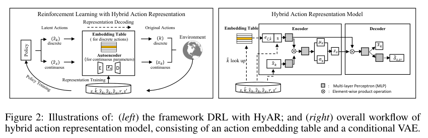
(a) 離散動作 embedding table
一張可學習的表 \(E_\zeta \in \mathbb{R}^{K \times d_1}\)，第 \(k\) 列 \(e_{\zeta,k}\) 是離散動作 \(k\) 的連續 embedding（初始化 \(U(-1,1)\)）。離散動作就此「連續化」，而且是學出來的連續化——語意相近的動作會被拉近。
(b) 條件式 VAE：編碼連續參數，並掛上依賴結構
VAE 的 encoder / decoder 都同時 condition 在 state \(s\) 和離散 embedding \(e_{\zeta,k}\) 上：
$$\text{encoder: } z_x \sim q_\phi(\cdot \mid x_k,\, s,\, e_{\zeta,k}) \in \mathbb{R}^{d_2} \qquad \text{decoder: } \tilde x_k = p_\psi(z_x,\, s,\, e_{\zeta,k})$$VAE loss 是標準的重建 + KL（其 Eq. 2）：
$$\mathcal{L}_{VAE}(\phi, \psi, E) = \mathbb{E}_{s,k,x_k}\Bigl[\;\|x_k - \tilde x_k\|_2^2 \;+\; D_{KL}\bigl(q_\phi(\cdot \mid x_k, s, e_{\zeta,k}) \,\|\, \mathcal{N}(0, I)\bigr)\Bigr]$$因為重建梯度也會流回 embedding table，表和 VAE 是一起學的。「參數的 latent 以離散 embedding 為條件」這個 conditional 結構，就是把 \(x_k\) 依賴 \(k\) 的關係隱式地織進 latent space——效果上類似 HHQN 的階層條件式結構，但因為 RL 端只有單一 latent policy，避開了非平穩性。實作細節上，條件分支 \((s, e_{\zeta,k})\) 與主分支是用 element-wise product 融合（比 concat 好：Goal 上 0.78 vs 0.66）。
(c) 編碼 / 解碼
latent 動作是一對向量 \((z_k, z_x) \in \mathbb{R}^{d_1 + d_2}\)。解碼是級聯的——先解離散、再以其 embedding 為條件解連續（其 Eq. 3）：
$$\hat k = \arg\min_{k \in \mathcal{K}} \|e_{\zeta,k} - \hat z_k\|_2 \quad (\text{embedding table 最近鄰查找}) \qquad \hat x_{\hat k} = p_\psi(\hat z_x,\, s,\, e_{\zeta,\hat k}) \quad (\text{VAE decoder})$$對照：這個想法跟 LDM（Latent Diffusion Model）很像
HyAR 的兩階段結構可以拿 LDM（Stable Diffusion 的基礎）來對照：LDM 的 Stage 1 先訓練 VAE，把高維的像素空間壓進一個緊緻的 latent space；Stage 2 再把 encoder 凍結，讓 diffusion model 在 latent space 裡作業。HyAR 一樣——Stage 1 用 embedding table + conditional VAE 把異質的混合動作壓進 latent space，Stage 2 讓 TD3 在 latent space 裡學 policy、決策後再 decode 回原始動作空間。主要差別在於 HyAR 的表徵模型在 RL 階段不凍結、持續微調（因此才需要 RSC relabeling 來修正舊經驗）。
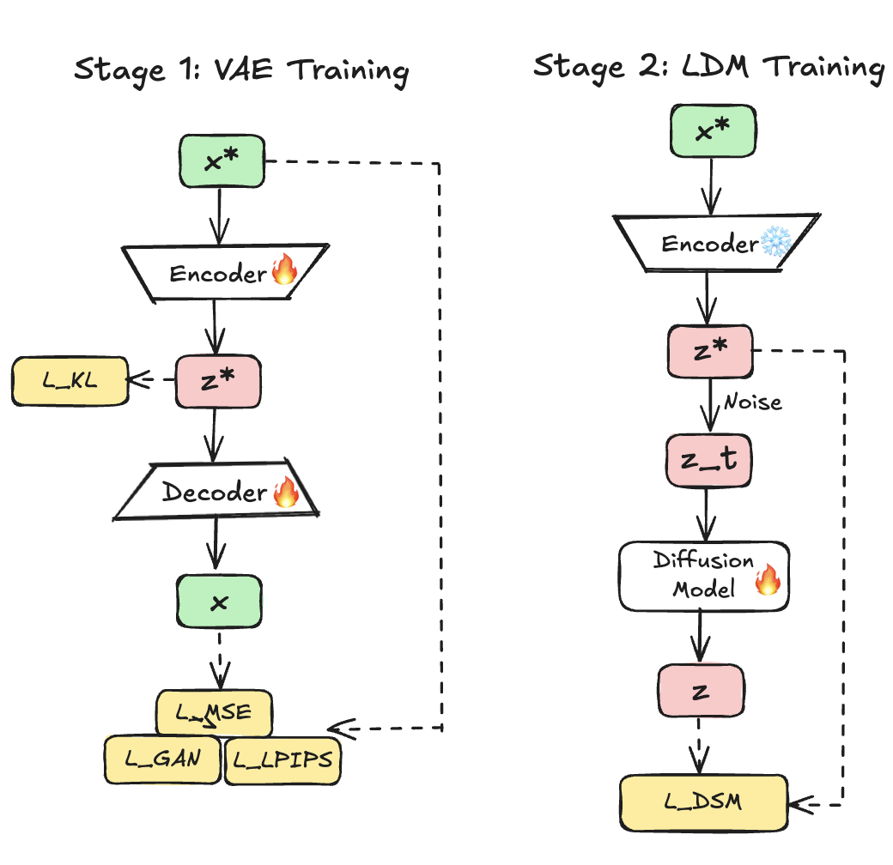
7.3 讓 latent 空間「懂環境」：dynamics-predictive loss
只靠 VAE 重建學到的表徵可能是「病態」的：重建得很好，但對「這個動作對環境造成什麼影響」毫無鑑別力——這對 policy / value 學習沒幫助。HyAR 加了一個無監督輔助任務：從 latent 動作預測狀態殘差 \(\delta_{s,s'} = s' - s\)：
$$\mathcal{L}_{Dyn}(\phi, \psi, E) = \mathbb{E}_{s,k,x_k,s'}\Bigl[\|\tilde\delta_{s,s'} - \delta_{s,s'}\|_2^2\Bigr] \qquad \mathcal{L}_{HyAR} = \mathcal{L}_{VAE} + \beta\, \mathcal{L}_{Dyn}, \quad \beta = 10$$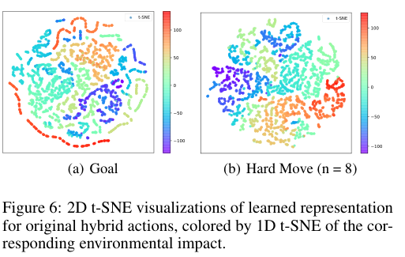
7.4 訓練流程：HyAR-TD3
latent policy \(\pi_\omega(s) \in [-1,1]^{d_1+d_2}\)（tanh 輸出），double critics 直接吃 latent 動作 \(Q_{\theta_i}(s, \hat z_k, \hat z_x)\)，標準 TD3（clipped double-Q + delayed deterministic policy gradient + Gaussian 探索雜訊 \(\mathcal{N}(0, 0.1)\)）。兩階段：
- Warm-up 預訓練：先用隨機策略收一批資料（約佔總步數 5–10%，附錄顯示砍 80% 也幾乎不影響結果），預訓練 embedding table + VAE（5000 個 batch）。
- RL 階段：TD3 在 latent space 學習；同時表徵模型持續微調（每 10 個 episode 更新一次）以跟上資料分佈的變化。凍結表徵的 ablation（Fixed HyAR）全面變差，在 Goal / Hard Goal 上甚至災難性失敗——表徵必須跟著 RL 一起演化。
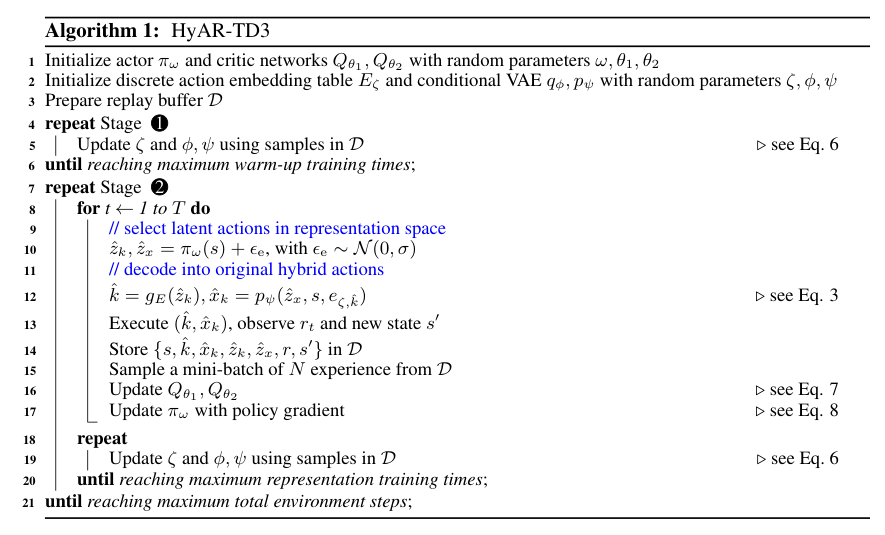
7.5 兩個關鍵的穩定機制
(a) Latent Space Constraint（LSC）
latent 空間是從有限樣本學出來的，資料支撐之外的區域解碼不可靠、Q 值也估不準。若 latent policy 輸出這種 out-of-distribution 的點（訓練初期很常見），表現會崩潰。解法：定期從 buffer 抽 \(M\) 筆資料算出每個 latent 維度的 c% 中央分位數區間，把 policy 的 tanh 輸出自適應地縮放到這個區間內。\(c = 96\) 最好；\(c=100\)（太鬆，包含離群點）與 \(c=80\)（太保守）都明顯變差（Goal：0.78 vs 0.62 vs 0.08）。
(b) Representation Shift Correction（RSC / relabeling）
表徵持續在變，replay buffer 裡存的舊 latent 動作會「過期」——同一個 latent 向量在新表徵下已不代表當初那筆 transition。解法：buffer 同時存原始動作與 latent 動作，每個 mini-batch 更新前檢查語意一致性並重新標記：
- 離散 latent：若用最新的 table 做最近鄰查找已對不回原本的 \(\hat k\)，就 relabel 為 \(e_{\zeta,\hat k} + \mathcal{N}(0, 0.1)\)。
- 連續 latent：用最新 decoder 預測 \(\tilde\delta_{s,s'}\)，若誤差超過門檻 \(\delta_0 = 4\hat{\mathcal{L}}_{Dyn}\)（動態的移動平均），就用最新 encoder 重新編碼 \(x_k\)。
這保證 value learning 永遠使用最新的表徵語意。移除 relabeling，Goal 從 0.78 掉到 0.55 且方差變大。
7.6 實驗
Benchmark：Platform、Goal、Catch Point，加上兩個作者自製的困難版——Hard Goal（射門切成 10 個 parameterized 動作）和 Hard Move（\(n\) 個致動器各自開/關 → 離散動作數 \(2^n\)，每個致動器帶一個連續距離參數；\(n \in \{4,6,8,10\}\) 對應 16 ~ 1024 個離散動作，專門考驗擴展性）。Baseline 全面 TD3 化以求公平（PATD3、PDQN-TD3、HHQN-TD3）。成功率摘要：
| 環境 | HyAR-TD3 | 最強 baseline |
|---|---|---|
| Platform | 0.98 | ≈0.9x（PDQN 系） |
| Goal | 0.78 | 0.71（PDQN-TD3） |
| Hard Goal | 0.60 | 0.44（PATD3）；PDQN-TD3 僅 0.06 |
| Catch Point | 0.90 | — |
| Hard Move (n=4，16 個離散動作) | 0.93 | 0.85（PDQN-TD3） |
| Hard Move (n=6，64 個) | 0.92 | 0.74 |
| Hard Move (n=8，256 個) | 0.89 | 0.05 —— 所有非 HyAR 方法全數崩潰（0.04–0.06） |
| Hard Move (n=10，1024 個) | 0.75 | ≈0.05 |
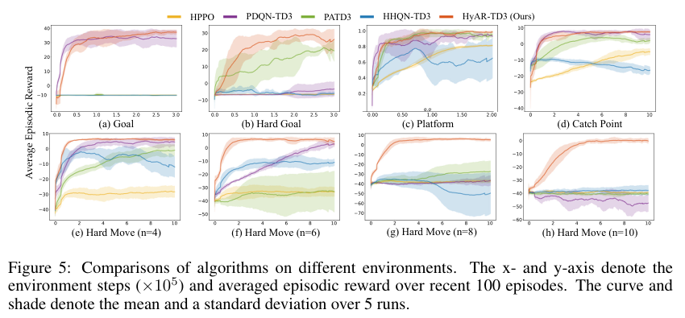
離散動作數指數成長時，HyAR 幾乎不退化，其他所有方法在 \(n \ge 8\) 全滅——因為別人的網路輸出維度跟著 \(K\) 線性爆炸，HyAR 的 latent 維度固定不變。唯一的例外情況：在小動作空間（Goal / Platform）上 PDQN 略勝 HyAR-DDPG（小空間中學出的 latent 可能稀疏帶噪；TD3 的低估偏差恰好補償，所以 HyAR-TD3 仍領先）。
8. 三方法總比較
| P-DQN (2018) | H-PPO (2019) | HyAR (2022) | |
|---|---|---|---|
| 哲學 | 為混合結構特製 value-based 演算法（DQN × DDPG） | 為混合結構特製 policy-based 演算法（PPO × 雙 actor） | 不改演算法，改動作空間（學 latent 表徵 + 標準 TD3） |
| On/Off-policy | Off-policy | On-policy | Off-policy |
| 離散選擇 | \(\arg\max_k Q(s,k,x_k)\) | softmax 抽樣 | latent 向量 → embedding 最近鄰 |
| 連續參數 | deterministic actor（全部輸出） | Gaussian actor（全部輸出） | latent 向量 → conditional VAE decoder（只解需要的） |
| 依賴結構 \(k \to x_k\) | 部分（Q 有 joint 輸入，但有 false-gradient 問題） | 無（兩 actor 獨立，靠共享 encoder/critic 間接協調） | 有（conditional VAE 級聯解碼） |
| 大 K 擴展性 | 差（輸出隨 K 爆炸；Hard Move n≥8 崩潰） | 差（同左） | 好（latent 維度與 K 無關） |
| 樣本效率 | 高（replay） | 低（on-policy） | 高（replay + TD3） |
| 穩定性 | 中（HFO 上有 16.8% 成功率標準差的紀錄） | 高（賣點就是低方差） | 依賴 LSC / RSC 機制，調好後穩定 |
| 實作複雜度 | 低-中（兩個網路） | 低（就是 PPO 加一個頭） | 高（VAE + table + 預訓練 + relabeling + LSC） |
| 已知弱點 | joint 參數輸入的 false gradients（→ 用 MP-DQN 修正）；sum-of-Q 更新錯位 | 忽略依賴結構；樣本效率；未用 joint ratio 無理論保證 | 工程複雜；小動作空間無優勢；表徵品質依賴 warm-up 資料覆蓋度 |
9. 參考文獻
- Xiong, J., Wang, Q., Yang, Z., Sun, P., Han, L., Zheng, Y., Fu, H., Zhang, T., Liu, J., Liu, H. Parametrized Deep Q-Networks Learning: Reinforcement Learning with Discrete-Continuous Hybrid Action Space. arXiv:1810.06394, 2018.
- Fan, Z., Su, R., Zhang, W., Yu, Y. Hybrid Actor-Critic Reinforcement Learning in Parameterized Action Space. IJCAI 2019 (arXiv:1903.01344).
- Li, B., Tang, H., Zheng, Y., Hao, J., Li, P., Wang, Z., Meng, Z., Wang, L. HyAR: Addressing Discrete-Continuous Action Reinforcement Learning via Hybrid Action Representation. ICLR 2022.
- Hausknecht, M., Stone, P. Deep Reinforcement Learning in Parameterized Action Space. ICLR 2016.（PA-DDPG）
- Masson, W., Ranchod, P., Konidaris, G. Reinforcement Learning with Parameterized Actions. AAAI 2016.（PAMDP / Q-PAMDP）
- Bester, C. J., James, S. D., Konidaris, G. Multi-Pass Q-Networks for Deep Reinforcement Learning with Parameterised Action Spaces. arXiv:1905.04388, 2019.（MP-DQN）
- Fu, H. et al. Deep Multi-Agent Reinforcement Learning with Discrete-Continuous Hybrid Action Spaces. IJCAI 2019.（HHQN）